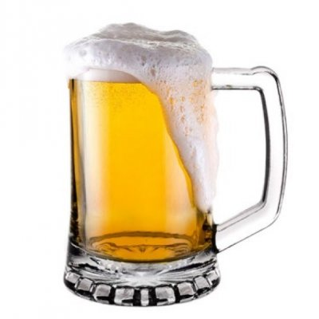

HISTORIA DEL ORIGEN DE LA CERVEZA
No se sabe con exactitud el origen de la cerveza. Probablemante su existencia sea tan antigua como el origen del hombre. Los primeros datos que se conocen datan de la época de los Sumerios, en la baja Mesopotamia, allá por el año 4000
antes de Cristo. Hoy correspondería con lo que es una parte de Irak. Los sumerios elaboraban una especie de cerveza que llamaban “ bebida fuerte “ con extracto de cebada.
Sabemos de su existencia porque se hallaron unas pequeñas tablas de arcilla donde se mencionaba tal licor.
Probablemente fueron los sumerios quienes por casualidad dejaron germinar algunos granos de cebada que al combinarlos con agua y levaduras salvajes dieron como resultado una incipiente cerveza. La antigua Mesópotamia se transformó con
el tiempo en el Imperio Babilónico, y los conocimientos sobre la elaboración de la cerveza se fueron ampliando. De hecho, los babilonios elaboraban diferentes tipos de cerveza.
La primera receta conocida se encuentra en el Código de Hamurabi. En el Museo Británico se encuentan dos piedras grabadas con más de 5.000 años de antigüedad donde se puede ver una ofrenda de cerveza a la diosa Nin-Harra. Se trata del
Monumento Azul. Al mismo tiempo, los egipcios también bebían un licor a base de cebada que llamaban “ zytum”. Esta bebida era aromatizada en ocasiones con miel, dátiles , canela, etc..
Se sabe que los trabajadores de las pirámides cobraban parte de sus salarios en cerveza. Recibían entre cuatro y seis litros de cerveza al día. Los egipcios exportaron la cerveza a los griegos, quienes a su vez la exportaron a los romanos
y éstos a los galos y germánicos. Sin embargo , los romanos no estaban muy interesados en este licor. Lo consideraban una bebida inferior, ya que ellos daban muchísima más importancia al vino. Fueron los galos y germánicos quienes empezaron
a elaborar la cerveza con malta de cebada y avena. Para dar aroma usaban el comino. En honor al Dios Ceres, Dios de la agricultura, los galos dan al licor que elaboraban el nombre de “ cerevisa”.

Esto si que es una buena jarra de Cerveza
De ahí el nombre de origen latino de “ cerveza” que nosotros conocemos. Durante la Edad Media fueron las Abadías de Centro Europa las guardianas de la cerveza, mejorando la caliadad de las recetas. Los monjes guardaron celosamente sus
recetas y lograron mejorar el aspecto, el aroma y el sabor de las cervezas que elaboraban. Hacia el Siglo XV se empieza a utilizar el lúpulo como aro matizante. Pronto se dieron cuenta que la cerveza a la que se le añadía lúpulo se conservaba
durante mucho más tiempo.
Sin querer habían encontrado un conservante natural debido a las propiedades antisepticas que posee. La cerveza se popularizó tanto en algunos países que pronto se crearon leyes para su regulación. El 23 de Abril de 1516 el Emperador
Guillermo IV de Babiera decreta la Ley de Pureza donde decreta que la cerveza solamente se debía elaborar a partir de tres ingredientes: agua, malta de cebada y lúpulo. Evidentemente aún no se conocía el ingrediente fundamental, el cuál había
estado desde el origen de la cerveza y que es el que realmente elabora la cerveza. Nos refrimos a la levadura. Es en el siglo XVIII cuando lo cerveza consigue su gran expansión.
Cerveceros bábaros almacenaban sus cervezas en sótanos, y cuevas a los que llaman Lagern ( almacén) donde dejaban que su cerveza madurara lentamente con el frío a temperaturas constantes, normalmente entre 8 y 10 grados. Utilizaban levaduras
de baja fermentación. La cerveza se comenzaba a industrializar a finales del siglo xix. Los principales centros productores en Europa eran Burton-onTrent en Inglaterra, München en Alemania y Pilsen en Bohemia. Cada uno de ellos tenía un estilo
propio de elaboración de cerveza.
 Amantes de la cerveza
Amantes de la cerveza